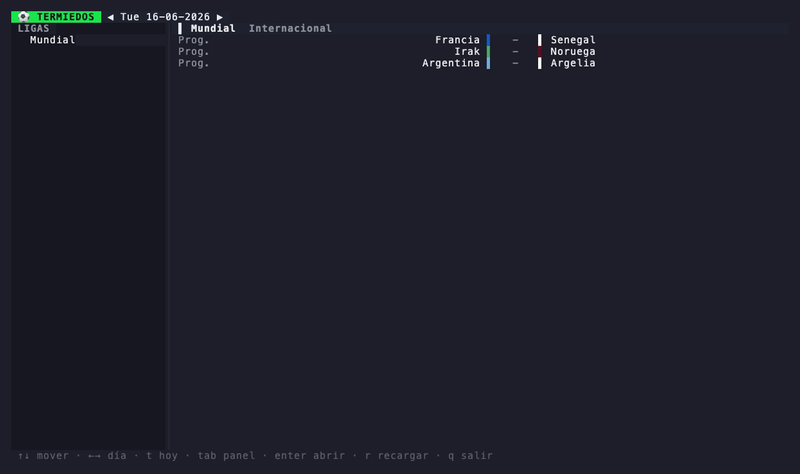

Marcadores en vivo, posiciones, fixtures y detalle de partido — sin abrir el navegador, sin ads, sin distracciones.
$ curl -fsSL https://raw.githubusercontent.com/ianaya89/termiedos/main/install.sh | sh

Un binario nativo que arranca al toque. Liviano, y corre igual sobre SSH en un servidor remoto.
Los partidos se actualizan solos cada 15 s. Cero banners, cero popups, cero cookies.
Navegás fechas, ligas y partidos sin tocar el mouse — como el resto de tus herramientas.
Todo promiedos, en cuatro pantallas.
Partidos del día agrupados por liga: hora/estado, colores de equipo y marcador. Navegás fechas con las flechas y la pantalla se recarga sola en vivo.
Tabla de la liga con zonas de clasificación por color y soporte de grupos y fases eliminatorias.
Listado completo de partidos por ronda de la liga seleccionada, navegable fecha a fecha.
Marcador, estado, estadio, árbitro y canales de TV de cada encuentro.
El sitio es genial. Pero a veces ya estás en la terminal.
Estás compilando, mirando logs o en un deploy. Chequeás el partido en la misma ventana y seguís — no abrís una pestaña que después te roba media hora.
Sin JavaScript de 3 MB, sin trackers, sin consentimiento de cookies. Solo los datos del partido, en texto.
En tu laptop o por SSH en un server. Si hay terminal, hay fútbol.
Pensado como una herramienta de dev: atajos de una tecla, vim-keys, todo a mano.
Listo en 10 segundos.
# script de instalación (Linux / macOS)
# descarga el binario, verifica el checksum y lo instala en ~/.local/bin
curl -fsSL https://raw.githubusercontent.com/ianaya89/termiedos/main/install.sh | sh
# homebrew (macOS)
brew install ianaya89/tap/termiedos
# desde el código fuente (requiere Go 1.26+)
git clone https://github.com/ianaya89/termiedos ~/termiedos
cd ~/termiedos
make install # -> ~/.local/bin/termiedos
Todo a un toque.
| Tecla | Acción |
|---|---|
| ↑ ↓ / k j | Mover la selección |
| ← → / h l | Día anterior / siguiente · cambiar de ronda (fixture) |
| t | Volver a hoy |
| tab | Cambiar de panel · alternar Posiciones ⇄ Fixture |
| enter | Abrir liga o partido |
| b / esc | Volver |
| r | Recargar |
| q | Salir |
Preguntas rápidas.
De la API pública de promiedos.com.ar — la misma que usa el sitio. termiedos solo la consume y la dibuja en la terminal.
Sí. Además del fútbol argentino trae ligas internacionales y torneos como el Mundial, con sus posiciones y fixtures.
No. Instalás el binario y corrés termiedos. Nada más.
Linux y macOS, en arquitecturas amd64 y arm64. Funciona en cualquier terminal moderna.
Sí, licencia MIT. El código está en GitHub.